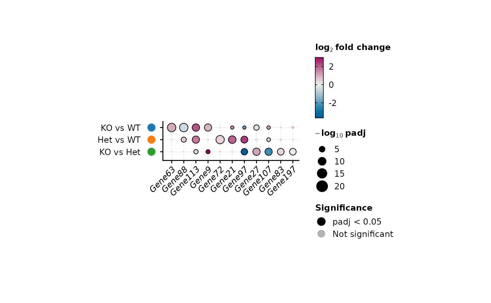
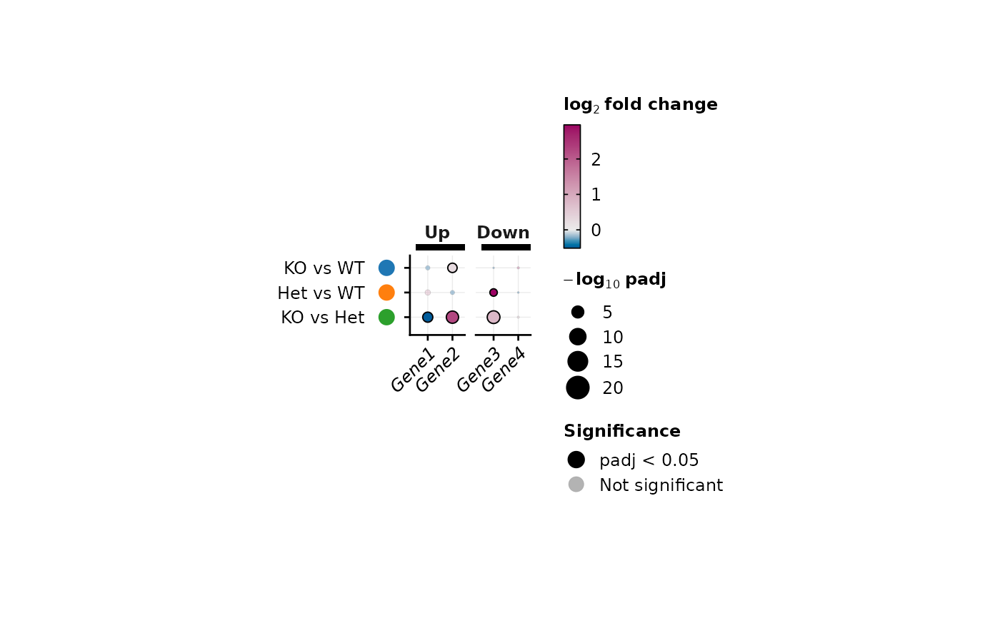

Shows selected genes across several DE comparisons: each dot's
colour is the log2 fold change and its size the -log10
adjusted p-value; non-significant results are faded. Reads
edgeR, DESeq2, limma and Seurat results (see
standardize_de). Every row and column has a fixed
size, so the plot is sized the same way in every figure; save
it with save_plot.
Usage
plot_de_dots(
de,
features = NULL,
n = 5,
method = c("auto", "edgeR", "DESeq2", "limma", "seurat"),
feature.col = NULL,
logfc.col = NULL,
p.col = NULL,
padj.col = NULL,
comparison.col = NULL,
groups = NULL,
padj.cutoff = 0.05,
logfc.cutoff = 0,
significance = c("fade", "grey", "hide"),
size.max = 20,
logfc.limits = NULL,
cluster.features = FALSE,
cluster.comparisons = FALSE,
cols = NULL,
comparison.marker = c("dot", "strip", "none"),
comparison.cols = NULL,
groups.cols = NULL,
groups.side = c("opposite", "labels"),
feature.group.cols = NULL,
feature.group.side = c("opposite", "labels"),
group.bar.width = 3.5,
flip = FALSE,
italic.genes = TRUE,
cell.width = 0.18,
cell.height = 0.18,
legend.position = c("right", "left", "top", "bottom", "none"),
bg = "transparent"
)Arguments
- de
DE results of several comparisons: a named list of DE tables (names = comparisons), or one table with a comparison column (`comparison.col`), e.g.
Seurat::FindAllMarkers()output- features
Genes to show: a character vector, or a named list (gene groups, drawn as labelled groups of columns). If NULL (default), the `n` most significant genes of each comparison (by adjusted p-value, then absolute log2 fold change), combined. Matched exactly (case matters)
- n
Number of top genes per comparison when `features` is NULL, default is 5
- method, feature.col, logfc.col, p.col, padj.col, comparison.col, groups
How the DE tables are read, see
standardize_de. `groups` (a group per comparison) draws comparisons as labelled groups of rows- padj.cutoff, logfc.cutoff
A result is significant when its adjusted p-value is below `padj.cutoff` (default 0.05) and its absolute log2 fold change above `logfc.cutoff` (default 0)
- significance
How significance is shown: "fade" (default; significant dots opaque with a dark ring, the others faded, all keeping their fold-change colour), "grey" (non-significant dots grey) or "hide" (non-significant dots not drawn)
- size.max
-log10 adjusted p-value drawn as the largest dot, default is 20 (padj = 1e-20); more significant results are drawn at that size and the legend says so
- logfc.limits
Limits of the colour scale. If NULL (default), from the most negative to the most positive log2 fold change of the significant dots, centred on 0: each side reaches its full colour at its own extreme. Give two numbers to share one scale between figures; values beyond get the colour of the end
- cluster.features, cluster.comparisons
Whether to order genes (within their groups) / comparisons (within their groups) by hierarchical clustering of their log2 fold changes, default is FALSE
- cols
Colours of the diverging log2 fold change scale: NULL (default, "blue-magenta"), a palette name, or colours from low to high, e.g. `c("#2166AC", "white", "#B2182B")`
- comparison.marker
How each comparison is marked with its colour next to its name, as the groups of
DotPlot_bioToolkit: "dot" (default; a coloured dot), "strip" (a colour strip) or "none"- comparison.cols
Colours of the comparison markers: NULL (default, "scanpy-20"), a qualitative palette name, or colours named by comparison (e.g. the cell type colours of an embedding)
- groups.cols
Colours of the bars marking the `groups` of comparisons: NULL (default) for black bars, a qualitative palette name, or colours named by group
- groups.side
Side of the `groups`: "opposite" (default; opposite the comparison names: on the right, or on top with `flip = TRUE`) or "labels" (beyond the comparison names)
- feature.group.cols
Colours of the bars marking the groups of genes (a named list of `features`): NULL (default) for black bars, a qualitative palette name, or colours named by gene group
- feature.group.side
Side of the gene groups: "opposite" (default; on top, or on the right with `flip = TRUE`) or "labels" (beyond the gene names)
- group.bar.width
Thickness of the bars marking gene groups and `groups`, in points, default is 3.5
- flip
Whether to draw genes as rows and comparisons as columns, default is FALSE
- italic.genes
Whether gene names are set in italics, default is TRUE
- cell.width, cell.height
Width of a column and height of a row in inches, default is 0.18
- legend.position
Position of the legends, default is "right"
- bg
Background colour, default is "transparent"
Details
Comparisons play the part of `group.by` in the single-cell plots
(the units compared, marked by colour) and `groups` that of
`split.by` (higher-level blocks, marked by a bar and a name).
Genes not tested in a comparison have no dot. The source data
(export_source_data) hold one row per gene and
comparison with the standardized DE columns plus `significant`.
Examples
set.seed(1)
genes <- paste0("Gene", 1:200)
make_de <- function() {
d <- data.frame(logFC = rnorm(200, sd = 1.5), logCPM = 5, PValue = runif(200)^5,
row.names = genes)
d$FDR <- p.adjust(d$PValue, "BH")
d
}
de <- list("KO vs WT" = make_de(), "Het vs WT" = make_de(), "KO vs Het" = make_de())
plot_de_dots(de, n = 4)
#> Detected edgeR results in 'KO vs WT' (logFC, PValue, FDR)
#> Detected edgeR results in 'Het vs WT' (logFC, PValue, FDR)
#> Detected edgeR results in 'KO vs Het' (logFC, PValue, FDR)

plot_de_dots(de, features = list(Up = c("Gene1", "Gene2"), Down = c("Gene3", "Gene4")))
#> Detected edgeR results in 'KO vs WT' (logFC, PValue, FDR)
#> Detected edgeR results in 'Het vs WT' (logFC, PValue, FDR)
#> Detected edgeR results in 'KO vs Het' (logFC, PValue, FDR)
